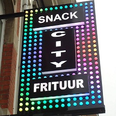

Interview met Huseyin Karanfil van Snack City op zondag 2 october 2016
Huseyin Karanfil, wat wilt u in jouw website zien?
Mijn klant wil zijn menu voorstellen met de prijzen erop. Ook dat je online bestellingen kunt plaatsen en ook beoordelen hoe dat hun levering en eten was. Zichzelf kort voorstellen en adres weergeven via Google maps. Daarnaast gaan ze pizza's leveren, graag zouden ze de pizza's in de menukaart ter beschikking stellen.
Hebben jullie een logo of moet die nog gemaakt worden?
Wij hebben wel een logo van onze Snack. Er mogen ook foto's genomen worden op locatie voor gebruik in de website.

Hebben jullie nagedacht over een bepaalde stijl, of kunnen jullie eventueel een website tonen die je zelf graag zou hebben?
We hebben geen specifieke stijl in ons hoofd maar we kunnen wel een paar goede voorbeelden tonen; http://desnackcar.be/ en https://www.o-tacos.fr/.
Welke producten en diensten moeten allemaal beschreven worden op de website?
In het algemeen de producten die hij verkoopt. Ook zijn er specifieke producten uit Gent die hij wilt voorstellen. Hij heeft al een brochure met prijslijst erop maar binnenkort gaat hij dat vernieuwen want hij gaat ook aan pizza leveringen doen.
Hoe ziet het doelpubliek van je klant er uit?
Ze hebben alle soorten klanten man, vrouw en kinderen met verschillende leeftijden en zijn meestal tweetalig. Ze hebben vooral klanten uit Meise, Grimbergen, Brussel, Vilvoorde, enz.
Wanneer kan je bij die mensen terecht voor extra informatie?
Maandag, want hij is gesloten elke maandag.
Met welke software werkt u?
Ik werk enkel met Windows.
Wie kan binnen de firma van je klant zorgen voor finale goedkeuring van de website?
Enkel de baas mag goedkeuren als de website in orde is.